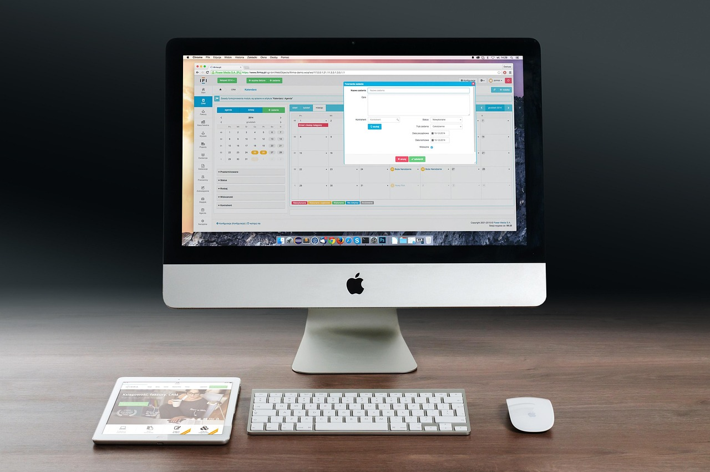

TL;DR
To build a realistic productivity system, tailor your tools to your personal work style. Avoid common pitfalls and implement a structured workflow. Start with clear goals and review your progress weekly.
Busy Professionals: Why You Need a Tailored Productivity System
If you're a busy professional juggling multiple projects, staying organized can feel like a constant battle. Many productivity tools promise to boost your efficiency, but often leave you feeling overwhelmed.
Whether it’s a simple to-do list app like Todoist or a comprehensive planner like Notion, these tools often don’t cater to the nuances of your individual workflow.
As a result, your productivity system might become another source of frustration instead of a solution.
Common Productivity Advice: Why It Misses the Mark

Most generic advice on productivity systems assumes everyone functions the same way. For instance, the conventional wisdom might suggest using time-blocking or the Pomodoro Technique.
While these methods work wonders for some, they can frustrate those who prefer flexibility or operate differently. Research shows that only about 30% of employees find traditional productivity methods effective.
Many individuals struggle with rigid systems that undermine their unique work styles. Personal preference, such as needing more frequent breaks or working better under pressure, is overlooked.
The reality is that embracing diverse work styles can significantly improve focus and output, making personalized systems essential.
Your Productivity Workflow: Steps to Build a System
Creating a productivity system tailored to your needs doesn't have to be complex. Here’s a structured workflow you can follow: 1. Identify Your Goals: Define clear, measurable objectives. For example, instead of a vague goal like 'be more productive,' aim for 'complete three projects this month.' 2. Choose Your Tools: Pick tools that suit your workflow. Apps like Trello or Asana can help with project management. For time management, explore tools like Clockify for tracking your hours. 3. Set a Weekly Review: Allocate 30 minutes every Sunday to assess progress and adjust your plan. Review what went well and what didn’t. 4. Prioritize Tasks: Use the Eisenhower Matrix to categorize tasks into urgent and important. Tackle high-priority tasks first; this shifts your focus to impactful work. 5. Implement Time Blocks: Organize your day into blocks for focused work without interruptions. For example, dedicate 9 AM - 11 AM for project work, devoid of distractions. 6. Stay Flexible: Be ready to tweak your system based on how it's working for you. If time blocks are stressing you out, adjust them to fit your rhythm better.
Following this workflow not only streamlines your tasks but promotes a sense of empowerment in your work.
30-Day Case Study: Implementing Your Custom System
A real-world scenario can highlight the effectiveness of a personalized productivity system. Imagine Sara, a marketing manager, who spent a frustrating month using an off-the-shelf productivity app.
Flustered by its limitations, she decided to craft her system over 30 days. Here’s how she did it:
- Week 1: Sara defined her goals. She committed to completing two major campaigns and organized her world into a kanban board on Trello.
- Week 2: She began a weekly review on Sundays, identifying bottlenecks in her workflow. She realized she could achieve most work in three-hour blocks each morning before meetings.
- Week 3: Sara started using Clockify to track her time. This opened her eyes to where she was wasting hours—like endless meetings.
- Week 4: Finally, she refocused her agenda based on achieved milestones. With a newly established weekly check-in, her productivity drastically improved within a month, and she delivered all campaign projects ahead of schedule.
Avoiding Common Pitfalls: Mistakes in Productivity Design
Creating a productivity system is not without its challenges. Here are some frequent mistakes and tradeoffs to avoid:
- Mistake 1: Overcomplicating your system. While a complex network of tasks might seem comprehensive, it often leads to overwhelm. Start simple and scale only when needed.
- Mistake 2: Falling for flashy productivity tools. Just because an app has great marketing doesn’t mean it will suit your needs. For instance, intricate features of apps like ClickUp may initially seem appealing, but can be cumbersome.
- Mistake 3: Ignoring personal preferences. If you work better in shorter sprints, don’t force a rigid time-blocking system. Find what fits you.
- Tradeoff: There’s also a tradeoff between structure and flexibility. A strict schedule can ensure completion but might restrict creative flow. Determine what works best through periodic reviews.
Recognizing these mistakes can make all the difference in maintaining an efficient workflow.
Next Steps: Tools to Enhance Your Productivity System
Once you have your personalized productivity system in place, explore these tools to further refine it:
- Trello: Great for managing projects visually. It’s particularly useful in a collaborative environment, helping teams stay aligned.
- Clockify: An excellent time-tracking tool perfect for identifying productivity patterns over weeks or months.
- Notion: A versatile note-taking and database app that can evolve alongside your productivity needs. It’s great for both task tracking and documentation.
- RescueTime: This tool runs in the background of your computer, providing insights into your habits and productivity benchmarks.
Finally, remember to reassess your system quarterly. Are there new tools worth trying? Are your methods still effective, or do you need a reset? Continuous optimization will keep your productivity levels up.
FAQ
What is the best productivity system for professionals?
The best productivity system is one that fits your personal workflow. Tools like Trello for task management and Clockify for time tracking can offer great frameworks.
How can I personalize my productivity methods?
Identify your unique work habits and preferences. Adjust existing tools to better fit your style, and don’t shy away from experimenting until you find your ideal balance.
This article is regularly reviewed for practical usefulness, ensuring that the advice remains actionable and applicable to modern workflows.
Turn this into a workflow
Do not stop at ideas. Pick one workflow, test it for 14 days, then keep only what reduces friction.
Search more articles
Find related tools, workflows, and guides.
Photo credits
- Photo 1: geralt via Pixabay
- Photo 2: Firmbee via Pixabay
- Photo 3: www.kaboompics.com via Pexels
- Photo 4: RDNE Stock project via Pexels
- Photo 5: Thirdman via Pexels